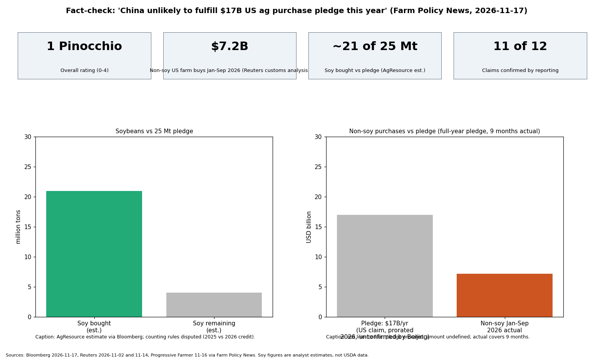

Every checkable fact and quote in the Nov 17, 2026 piece matches its Bloomberg, Reuters or Progressive Farmer original. The weakness is framing: the $17B pledge is a White House claim that Beijing never confirmed, with an undefined 2026 prorated amount, so "unlikely to fulfill" is an analyst judgment, not a measured miss.
| Claim | Verdict | Source | Confidence |
|---|---|---|---|
| $17B/yr from 2026, prorated, announced in May | True as US claim; Beijing unconfirmed | Reuters Nov 2 | High |
| Buckner quote "pretty low" | Verified | Bloomberg Nov 17 | High |
| $7.2B non-soy Jan-Sep, lowest since 2019 | Verified as published | Reuters Nov 2 | Medium-high |
| Near 25 Mt soybeans | Supported by AgResource; contested counting | Bloomberg | Medium |
| September tariff cuts pending | True | Bloomberg | High |
| ASA letter, remaining 10% tariff | True | Progressive Farmer, ASA | High |
| First trade council meeting "Friday" | True: Nov 13, announced Nov 14 | Reuters, CNBC | High |
| Trump-Xi at APEC Shenzhen Nov 18-19 | Consistent | Agri-Pulse | High |